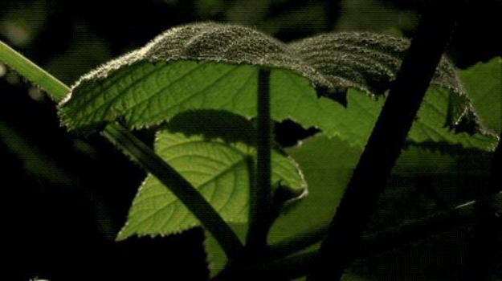

金皮树

盛产于澳大利亚东北部、摩鹿加群岛和印度尼西亚的金皮树被公认为世界最毒树之一。金皮树表面上看起来无毒无害，实际上危险万分。其毒性可毒死一匹健壮的马。对于护林人、勘测员和伐木工来说，金皮树是一个潜在的致命威胁。
在20世纪60年代末，英国军队对金皮树产生了浓厚的兴趣。英国维尔特郡波顿唐的化学防御基地(英国发明化学武器的高级秘密实验室)曾联系了澳大利亚昆士兰大学病理学教授艾伦·西赖特(Alan Seawright)，希望他能提供一些金皮树的样本。西赖特教授说：“他们发明的武器主要用于战争，所以我觉得他们想利用金皮树发明生化武器。”
金皮树的奥秘
为什么我们说金皮树不能轻易的靠近呢，它究竟为什么又会对其他生物造成生命的威胁？原来金皮树除了根部以外，其他的所有身体部位都蕴含着巨大的毒素，它的树干果实和树叶树枝上都均匀的分布着密密麻麻的细小的针刺，不管是人类还是其他生物，只要不小心的触碰到这些小毛刺，这些小毛刺就会迅速的进入到其他生物体的身体内部，之后会释放出巨大的毒素，对身体和安全造成极大的威胁和困扰。
如果不及时加以治疗，就会在不久之后逐渐的失去生命特征，就算及时诊疗，之后在接下来的几个月里也会日日如抓耳挠腮般疼痛，心中疼痛万分，还会不定期的进行病情的反复和发作，给我们带来巨大的痛苦和创伤。
更毒的是，并不是你不碰它就能免受其害，如果你看到一棵金皮树，最好马上离它远点。只要你在它旁边待20分钟，脱落的毛刺就可能被你吸入鼻腔里。起初你可能只会打喷嚏，三小时内鼻腔会出现弥漫性疼痛，26小时后就会出现急性喉咙痛、鼻窦疼痛，接着鼻腔中会流血、化脓，最后造成严重的呼吸系统损伤。
所幸的是金皮树只在澳大利亚大量分布，中国是没有的，但是很多人都被这种类型的植物扎过，大家说的应该就是在中国广泛分布的荨麻草，有的地方叫老虎草、有的地方叫蜇人草。
荨麻的茎叶上也有尖利的刺毛，这种刺毛很尖锐，上半部分中间是空腔，基部是由许多细胞组成的腺体。基部腺体分泌的蚁酸对人体有较强的刺激作用，所以一旦刺毛进入人的皮肤中，就会释放蚁酸，让皮肤产生痛痒的感觉。
↑荨麻草 金皮树叶↑